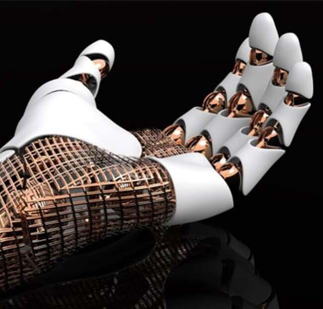
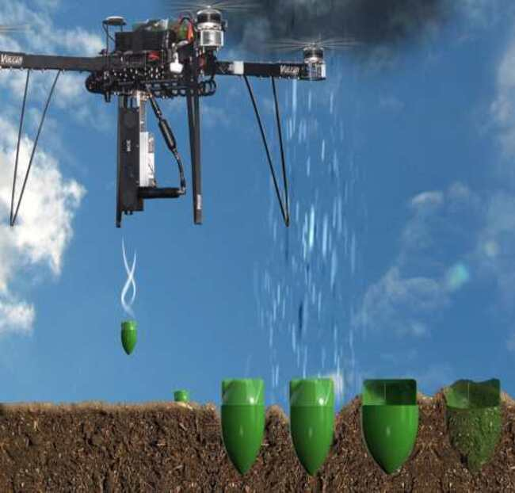
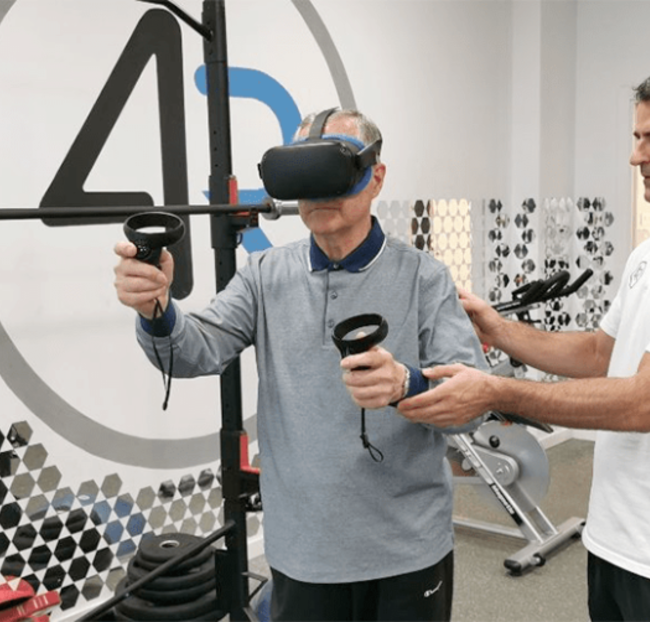

Impresión 3D de Prótesis Personalizadas
Un sistema que utiliza escáneres 3D y tecnologías de impresión 3D para crear prótesis personalizadas y económicas para personas con discapacidades físicas.
Ver más detalles

Drones para Reforestación
Este proyecto emplea drones equipados con sistemas para sembrar semillas en áreas deforestadas o de difícil acceso.
Ver más detalles

Realidad Virtual para Rehabilitación Física
Este proyecto utiliza la realidad virtual (VR) para ayudar a los pacientes en su rehabilitación física tras lesiones o cirugías.
Ver más detalles
Red de Sensores para Monitoreo de Calidad del Aire
Un sistema basado en sensores distribuidos en áreas urbanas para medir y analizar la calidad del aire en tiempo real.
Ver más detallesAsistentes Virtuales para Educación Personalizada
Un sistema de inteligencia artificial diseñado para actuar como tutor virtual, adaptándose al nivel de aprendizaje de cada estudiante.
Ver más detalles